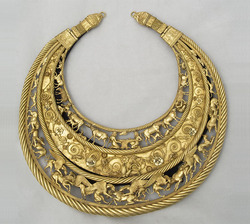
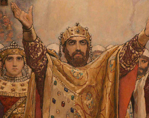
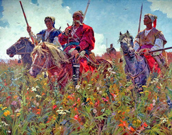
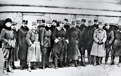
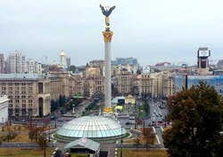

Епохи ставлення України
Давня історія України
V тис. до н.е — ІХ cт.
Давня історія України охоплює період, який розпочався з часу зникнення неандертальців і тривав до появи історичних слов'ян.Бронзовий вік тривав на землях України понад дві тисячі років, з другої половини I V до кінця ІІ тис. до Р.Х. У степах змінювали одна одну культури народів, які вели напівосілий, а часом і кочовий спосіб життя, використовуючи новий винахід того часу вози на колесах
Період від трипільської культури до сарматів
На сторінках стародавніх хронік і літóписів перші згадки про слов'ян з'являються близько півтори тисячі років тому. В ті часи жили вони на землях, які нині знаходяться на території Білорусі, Польщі та України. Звідси розселялися на захід, на схід і на південь. Сучасні українці — це одна з гілок історичного слов'янства.
Русь
IX ст. — XIII ст.
Чотири століття, коли Київ був «матір’ю міст руських», стали золотими сторінками нашої історії. Це були не лише часи становлення величезної держави, межі якої було розсунуто від Волги за Карпати, але і часами заснування багатьох міст, становлення ремесел, розквіту культури, торгівлі, нарешті вибору Віри.
Зародження слов’ян і розбудова міст Київської Русі
Мешканці стародавнього Києва та інших малих і великих міст жили у будинках, зроблених з дерева, милували око садиби бояр та заможних купців. Поруч з монументальними мурованими храмами можна було побачити дерев’яні ошатні церкви.
Козацька доба
XV ст. - XVIII ст.
Одні з найдавніших на сьогодні писемних згадок про українське козацтво за 1489 та 1492 роки переконливо засвідчили його запеклу боротьбу з войовничими турками і татарами, яка продовжувалася протягом наступних століть. Запорозька Січ – це своєрідне військово-політичне утворення, яке виникло на південних землях України, і надалі було найхарактернішим проявом військової культури української нації.Із західним світом козаків поєднували такі елементи лицарства, як родинний принцип організації, побратимство, рівність, демократизм; морально-етичний кодекс поведінки воїна-січовика – мужність, відвага, вірність, честь, добра слава, боротьба проти ворогів віри, оборона вітчизни; специфічне ставлення до жінки, аскетизм, релігійність тощо
Запорозька Січ
Запорозька Січ – це своєрідне військово-політичне утворення, яке виникло на південних землях України, і надалі було найхарактернішим проявом військової культури української нації. Із західним світом козаків поєднували такі елементи лицарства, як родинний принцип організації, побратимство, рівність, демократизм; морально-етичний кодекс поведінки воїна-січовика – мужність, відвага, вірність, честь, добра слава, боротьба проти ворогів віри, оборона вітчизни; специфічне ставлення до жінки, аскетизм, релігійність тощо
Відродження нації та боротьба за незалежність
XІХ ст. — XX ст.
Відродження нації та боротьба за незалежність – це низка подій пов’язаних із національно-визвольною боротьбою українського народу. Від періоду Української революції у 1917—1921 роках до Українського визвольного рух на етнічних українських землях у 1920—1950 роках за умови окупації її земель різними державами та під час Другої Світової війни 1939—1945 років.
Сучасна Україна
XXI ст.
Сучасна Україна – це Україна XXI століття. Це – найбільша країна Європи, її географічний центр. Це – талановиті, працьовиті, хлібосольні люди. Це – багатовікова історія і споконвічне прагнення незалежності. Це – красива природа, багата культура і славні традиції.
Українці - нація не по крові, а по духу. Адже на території України живуть понад 100 національностей, які люблять свою країну, захищають її, поважають, підтримують її культуру та історію.
Весь текст, що містить ця сторінка, копіювалась уривками, тому інфрмація може бути непослідовною та незрозумілою, але є посилання на статті з яких брався контент даної статті. P.S. Перепрошую за орфографічні та синтаксичні помилки в тексті
Більше про історію давньої України можна дізнатись тут
Більше про історію Козацтва України можна дізнатись тут
Більше про історію Київськох Русі можна дізнатись тут
Більше про історію відродження нації таборотьбу за незалежність України можна дізнатись тут
Більше про сучасну історію України можна дізнатись тут